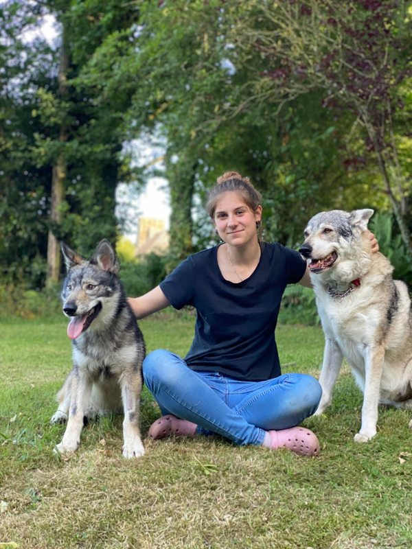

Passionnée par les chiens depuis toujours, j'ai très vite su que je souhaitais faire de cet univers mon métier. C'est lors d'un stage dans un élevage canin que je fais la découverte du chien loup, une rencontre marquante qui confirme mon envie de travailler au plus près de ces animaux d'exception.
Après l'obtention de mon bac STAV, je m'oriente vers un BAC CGESCF en apprentissage afin d'acquérir une expérience concrète sur le terrain et de développer mes compétences dans le milieu canin. Durant ce parcours, j'obtiens l'ACACED chien et chat, certification indispensable pour exercer professionnellement auprès des animaux.
À la suite de ma formation, j'intègre un élevage où je continue d'apprendre et de développer mon savoir-faire au quotidien. C'est cette expérience qui m'a conduite à créer l'élevage Des Terres de Winoha, en Sarthe (72), spécialisé dans le chien loup mixte — des croisements entre chien loup tchécoslovaque et chien loup américain, deux lignées complémentaires qui donnent des animaux d'une rare richesse comportementale.
À l'élevage des Terres de Winoha, je travaille exclusivement avec des reproducteurs soumis à des tests génétiques rigoureux, pour vous proposer des chiots sains, bien dans leur tête et bien dans leur corps. Chaque chiot est élevé dans un environnement familial, socialisé dès les premiers jours, et suivi bien au-delà de son départ de l'élevage.
Mon objectif est simple : offrir aux chiens un environnement respectueux de leurs besoins, en mettant au cœur de mon travail leur bien-être, leur équilibre, et une relation basée sur la compréhension et la communication. Parce qu'adopter un chien loup mixte c'est un engagement fort — et vous méritez un élevage qui vous accompagne vraiment.
Adopter un chiot →